同一段回放，提交时间收回来了
官方 Beautiful Chat（42b61d8）对上这个 fork。横条先画成官方的长度，再收到现在的长度。淡色留下的是省掉的那一截。
Web 是生产构建，每个场景 1 次。iOS 是同一次会话里官方和本仓库交替各跑 4 次的中位数。原始表在 docs/bench/final-report.md（代码 81ce36b）。
官方
本仓库
4ms 预算
提升
倒退
Web 上最忙的那张卡片
纵轴是场景，横轴是提交时间的 p95，对数刻度。10 个场景收到虚线左边或贴着虚线；100 轮历史仍在右边。

| 场景 | 官方 p95 | 本仓库 p95 | 变化 |
|---|---|---|---|
| 代码块流式 | 10.5 | 1.7 | 84% |
| 大 diff | 208.9 | 1.9 | 99% |
| 100 轮历史 | 95.6 | 32.4 | 66% |
| 长回复 | 16.3 | 1.7 | 90% |
| 混合一轮 | 8.7 | 1.7 | 80% |
| 读 20 个文件 | 230.2 | 2.0 | 99% |
| 思考散文 | 3.1 | 0.8 | 74% |
| 思考分节 | 5.5 | 0.8 | 85% |
| 大段终端 | 30.0 | 2.2 | 93% |
| 表格流式 | 2.0 | 1.4 | 30% |
| 展开的工具 | 16.7 | 1.3 | 92% |
单位是毫秒。绿色向上箭头是提升（耗时下降），红色向下箭头是倒退（耗时变长）。100 轮那一行没进 4ms：110 张卡片同时停在正在生成区，按最大速度回放。
iOS 上同一次会话
线性刻度，0 到 160 毫秒，画的是 p95。助手、思考、工具、待办收到大约原来的四分之一。用户那一行几乎重叠，p95 从 31.1 到 31.9。

| 卡片 | 官方 p50 | 本仓库 p50 | p50 | 官方 p95 | 本仓库 p95 | p95 |
|---|---|---|---|---|---|---|
| 用户 | 18.0 | 26.6 | 48% | 31.1 | 31.9 | 3% |
| 助手 | 23.4 | 15.5 | 34% | 103 | 25 | 76% |
| 思考 | 26.7 | 12.9 | 52% | 100 | 23 | 77% |
| 工具 | 52.2 | 18.9 | 64% | 125 | 32 | 74% |
| 待办 | 74.5 | 28.5 | 62% | 146 | 41 | 72% |
单位是毫秒。mixed-turn，同一模拟器会话里交替各 4 次。用户卡片的 p50 变慢了，从 18.0 到 26.6；整轮里它多出来的大约 14ms，换来其余卡片少掉零点几秒到一秒多。
帧、内存、还在转的动画
| 场景 | 掉帧 | 最长帧 | 堆内存 | 结束时的循环动画 |
|---|---|---|---|---|
| 代码块流式 | 1.0% → 0.2% | 133 → 50 | 143 → 183 | 0 → 0 |
| 大 diff | 14.8% → 0.3% | 517 → 33 | 349 → 203 | 3 → 0 |
| 100 轮历史 | 77.6% → 45.4% | 833 → 183 | 352 → 384 | 327 → 0 |
| 长回复 | 5.4% → 0.2% | 200 → 50 | 147 → 157 | 0 → 0 |
| 混合一轮 | 1.1% → 0.2% | 117 → 50 | 158 → 141 | 21 → 1 |
| 读 20 个文件 | 9.1% → 0.5% | 567 → 50 | 325 → 148 | 72 → 0 |
| 思考散文 | 0.5% → 0.1% | 67 → 33 | 159 → 142 | 0 → 0 |
| 思考分节 | 0.4% → 0.2% | 67 → 33 | 143 → 153 | 0 → 0 |
| 大段终端 | 0.8% → 0.3% | 133 → 50 | 154 → 152 | 2 → 0 |
| 表格流式 | 0.6% → 0.1% | 67 → 33 | 224 → 146 | 0 → 0 |
| 展开的工具 | 0.3% → 0.2% | 50 → 33 | 152 → 149 | 2 → 0 |
Web 生产构建。掉帧是比例，最长帧是毫秒，堆内存是 MB，取整到个位。循环动画是跑完时还挂着的个数。100 轮历史的掉帧和堆内存没有一起变好。
文字说明和离线回放的次数在 相对官方的差异。